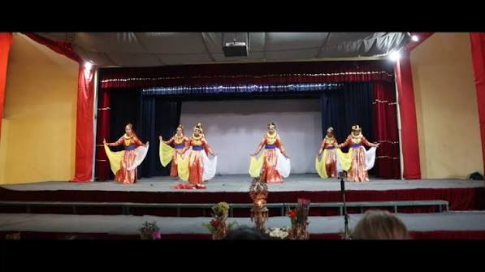

More than five decades of education and community.
Gyanodaya Bal Batika was established in 1975 with the vision of providing meaningful educational opportunities for children and young people.
Over the years, the school has continued to grow and adapt while keeping education, character and community at the heart of its mission.
Gyanodaya Bal Batika began its educational journey, creating a foundation for generations of students.
The school continued to develop its educational programs, facilities and community.
Today, the school continues to educate students while looking toward the future.

Celebrating culture, creativity and community.
Celebrating the accomplishments of our school community.
“A school's legacy lives on through the generations it inspires.”